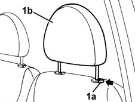
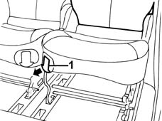
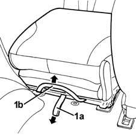
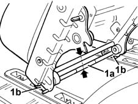

7050A90 rear seat (one) - r re - repair with seat removed
- Path
- Procedures > 70 FITTINGS > 7050 REAR SEATS > 7050A rear seat assembly > 7050A90 rear seat (one) - r re - repair with seat removed
- Kind
- repair procedure (removal / refitting; the operation number is the code)
- Applies to
- all engines; all production periods
- Interactive page
- https://sloeber94.github.io/elrnDB-fMltpl/en/#/2892245
Applies to: all engines; all production periods
 Removing
Removing
 Refitting
Refitting1. Press the retainer (1a) and lower the head restraint fully.

Applies to: all engines; all production periods
1. Fold the squab fully onto the seat, using the adjustment lever.

Applies to: all engines; all production periods
1. Working from the rear of the seat, pull the knob (1a) and lift the seat fully using the handle (1b).

Applies to: all engines; all production periods
1. Lift the release lever (1a), then remove the seat, disengaging it from the front retainers (1b).

Applies to: all engines; all production periods
Refitting
RemovingCheck that the seat is not damaged.
Engage the seat's front retainers.
Lower the seat and engage the rear retainers.
Raise the seat squab using the adjustment lever.
Press the retainer and raise the head restraint as required.
Topics that link to this page (13)
- 1040A10 fuel tank - r + r and decant fuel
- 1040A14 fuel tank - r + r for replacement
- 1040A20 FUEL TANK - R + R AND DECANT FUEL FOR VERSIONS WITH EVAPORATION CONTROL SYSTEM
- 1040A22 fuel tank - r + r for versions with evaporation control system for replacement
- 1040A70 submerged pump assembly complete with level guage control - r + r
- 5505C41 cabin wiring - r r
- 7040B18 L/H OR R/H SIDE TRIM (ONE) OF LUGGAGE COMPARTMENT/LOAD PLATFORM - ARRANGE
- 7040H10 roof panel lining - r r
- 7040H16 roof panel lining - r r
- 7040L13 passenger compartment floor soundproofing - r r
- 7040L14 panel brackets (1) covering seat attachments to passenger compartment floor - r r
- 7040L18 passenger compartment floor rear carpet - r r
- 7050A95 mount (one) fitting rear seat to floor - r r